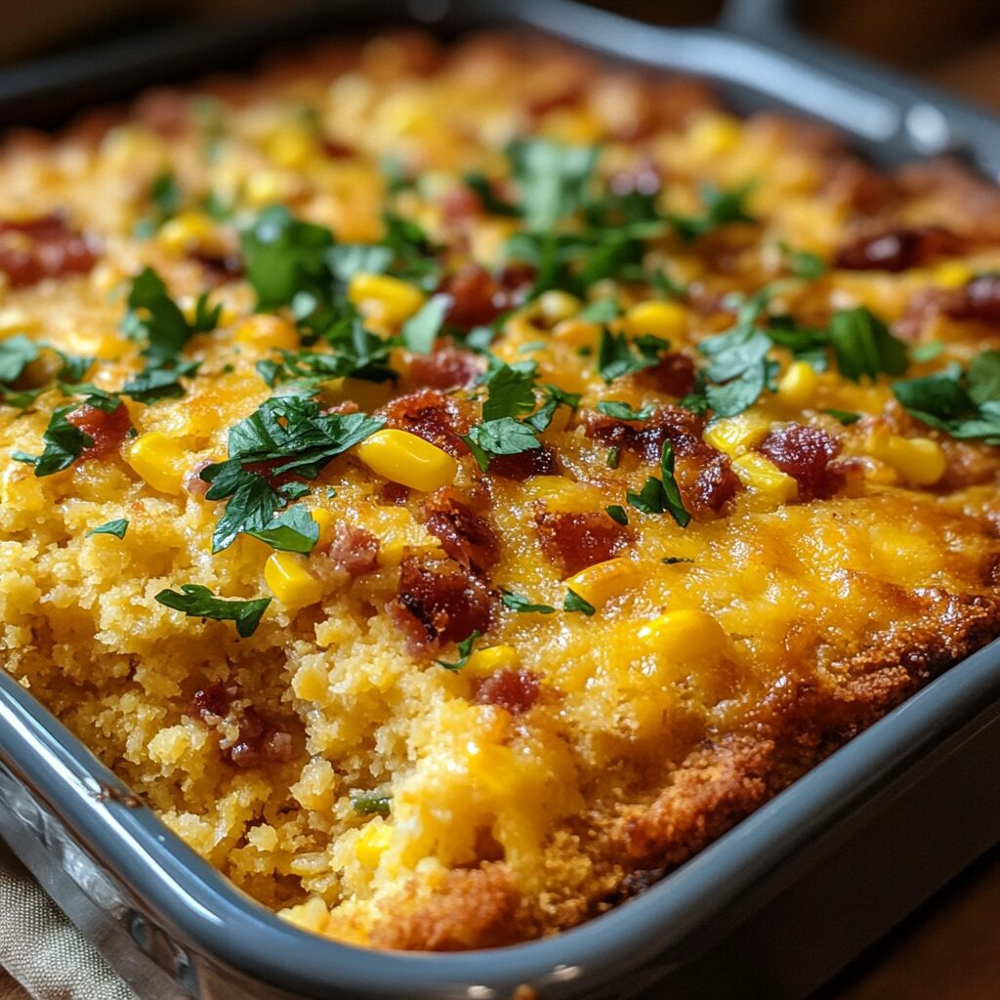

Cowboy Chicken Cornbread Casserole
Home

Description
A hearty, comforting, aromatic, smoky, and cheesy helping, this food hits all the right notes, reminiscent of the stone hearths that cowboys miss while they are out in the wild, wrangling away with the bovines.
Ingredients
- cooking spray
- 3 cups shredded rotisserie chicken
- 16 ounce jar mild/medium chunky salsa
- 15 ounce can black beans, drained and rinsed
- 10.5 can of condensed chicken soup cream
- 1 cup frozen corn
- 1 large jalapeño chile, seeded and finely chopped
- 1 (1 ounce) envelope taco seasoning
- 6 garlic cloves, finely chopped
- 2 cups shredded pepper Jack cheese
- 2 cups self-rising white or yellow cornmeal mix
- 1 1/2 cups whole buttermilk
- 1/4 cup olive oil
- 1 large egg
Steps
- Preheat the oven to 400 degrees F (200 degrees C). Lightly coat a 13x9-inch baking dish with cooking spray; set aside. Stir together chicken, salsa, black beans, cream of chicken soup, corn, jalapeño, taco seasoning, and garlic in a large bowl.
- Transfer mixture to the prepared dish, and spread into an even layer.
- Sprinkle pepper Jack evenly over chicken mixture.
- Whisk together cornmeal mix, buttermilk, olive oil, and egg until combined; spread batter evenly over cheese.
- Bake in the preheated oven until bubbly and cornbread is golden brown, about 30 minutes.